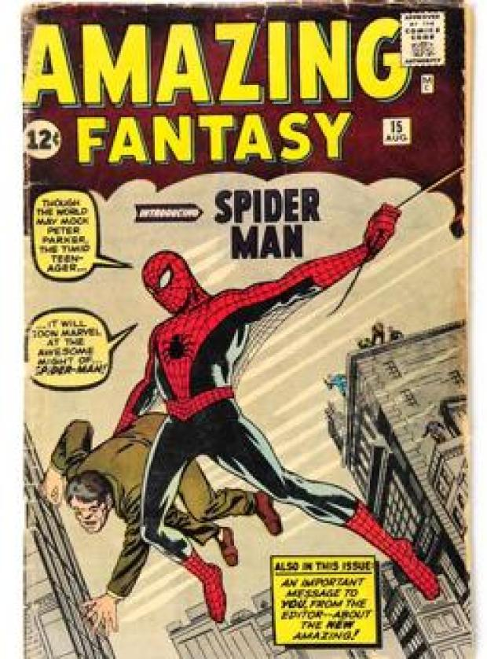
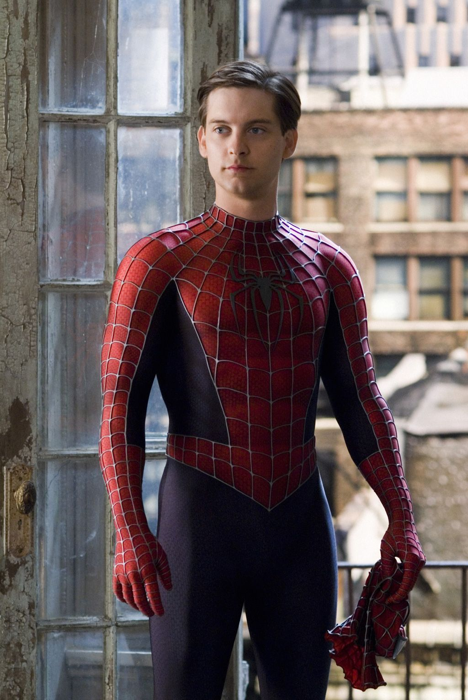
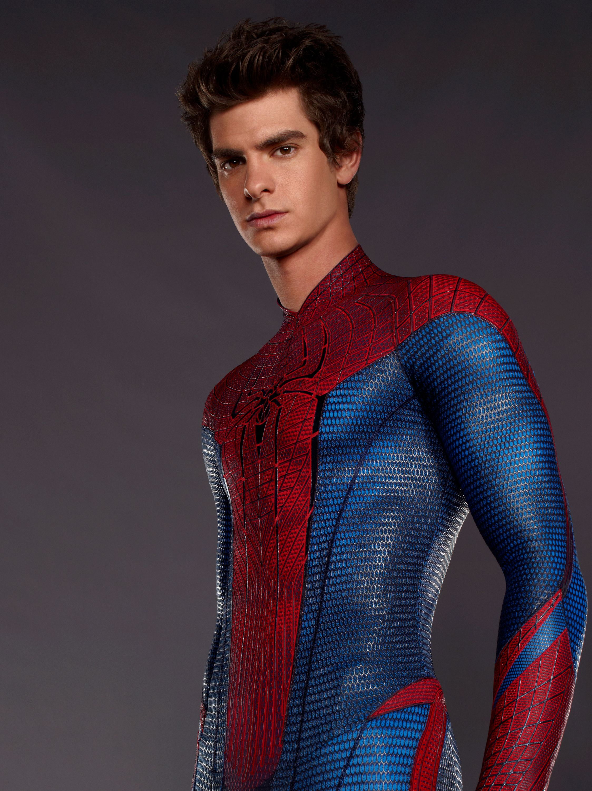

Spiderman (Miles Morales).
 Spiderman |
|---|
 Spiderman (Tobey Maguire) |
 Spiderman (Andrew Garfield) |
 Spiderman (Tom Holland) |
 Spiderman (Miles Morales) |
Spider-Man: Un nuevo universo (título original en inglés: Spider-Man: Into the Spider-Verse) es una película estadounidense de superhéroes animada por computadora de 2018, dirigida por Bob Persichetti, Peter Ramsey y Rodney Rothman y escrita por Phil Lord y Rothman. La cinta es una adaptación de la línea de cómics Spider-Verse y cuenta con las voces de Shameik Moore como Miles Morales / Spider-Man y Liev Schreiber como el villano Kingpin. Es producida por Sony Pictures Animation en asociación con Marvel Entertainment, y fue estrenada por Columbia Pictures el 14 de diciembre de 2018. Cuenta con la colaboración de Post Malone y Swae Lee en su canción " Sunflower" que corresponde a la banda sonora de la película.
Argumento
La historia se centra en un chico llamado Miles Morales, un adolescente que admira a Spider-Man, lucha por adaptarse a su nuevo internado de élite y estar a la altura de las expectativas de sus padres, Rio Morales y Jefferson Davis, quienes consideran a Spider-Man como una amenaza. Después de sentirse atraído por su compañera de clase "Gwanda", Miles busca el consejo de su tío Aaron Davis. Donde su tío Aaron alienta a Miles a seguir su pasión por el grafiti y lo lleva a una estación de metro donde puede dibujar. Mientras está allí, Miles es mordido por una araña radioactiva y desarrolla habilidades de araña. Incapaz de ponerse en contacto con Aaron, regresa a la estación y encuentra un laboratorio secreto donde Kingpin ha construido un acelerador de partículas para acceder a universos paralelos y volver a conectarse con versiones alternativas de su esposa e hijo, que murieron en un accidente de auto hace unos años. Sin embargo Spider-Man llega para deshabilitar el acelerador y lucha contra el Duende Verde y Prowler. Durante el combate cuerpo a cuerpo, Spider-Man se encuentra con Miles y siente que se parecen por sus respectivos poderes. Duende Verde intenta matar a Spider-Man forzándolo a entrar en el flujo de energía del acelerador, pero en su lugar hace que funcione mal. La explosión resultante mata al Duende Verde y hiere mortalmente a Spider-Man, quien le da a Miles un dispositivo USB, para desactivar el acelerador y le informa que la máquina podría destruir la ciudad si la vuelven a encender. Poco después, Kingpin se aparece en la escena mata a Spider-Man y Miles se escapa del lugar muy asustado. Inspirado por el sacrificio de Spider-Man, Miles intenta dominar sus nuevas habilidades pero daña inadvertidamente la unidad USB. Sin embargo cuando este esta visitando la tumba del que una vez fue su inspiración, rápidamente es encontrado por Peter B. Parker, un Spider-Man proveniente de otra dimensión, que es más viejo y hastiado, se ha separado de su exesposa Mary Jane Watson y recientemente perdió a su tía May. En medio de la conversación Peter le revela que ha sido llevado al mundo de Miles por el acelerador y necesita regresar a casa, por lo que acepta a regañadientes capacitar a Miles a cambio de su ayuda en el robo de datos sobre cómo reparar la unidad del centro de investigación de Kingpin. Mientras ingresa al edificio, Miles le muestra sus habilidades únicas de invisibilidad y un "estallido de veneno eléctrico" que puede inhabilitar a los enemigos al tocarlos. Se enfrentan a la asistente de Kingpin, Olivia Octavius, quien revela que Peter eventualmente se deteriorará y morirá cuanto más tiempo permanezca en la dimensión de Miles. Finalmente Miles y Peter terminan siendo son rescatados por "Gwanda", quien también se revela como una superheroína de otra dimensión cuyo nombre real es Gwen Stacy y que lleva dos años siendo Spider-Woman en su respectiva dimensión, sin embargo ella les revela que había estado a la dimensión de Miles desde la semana pasada. Gwen lleva a Peter y Miles a casa de May Parker, quien está albergando a Spider-Man Noir, Spider-Ham y Peni Parker y SP//dr. Se revela que ellos también se están deteriorando, por lo que Miles propone desactivar el acelerador para enviar a los otros Spider-People a casa antes de que estos mueran desintegrados. Mientras Peni repara el disco, Peter intenta sin éxito enseñarle a Miles cómo controlar sus poderes. La presión del grupo hace que Miles se sienta abrumado y escapa al apartamento de Aaron, donde descubre que éste es Prowler. Miles regresa a casa de May, pero es seguido por Kingpin, Aaron, Octavius, Escorpión y Tombstone, lo que lleva a una pelea. Aaron acorrala a Miles en un techo y éste se quita la máscara, revelándole que es su sobrino. Cuando Aaron se niega a matar a Miles, Kingpin sin pensarlo dos veces le dispara a Aaron. Miles consigue llevar a su tío Aaron a un lugar seguro, pero este muere a causa de sus heridas. Jefferson descubre a Miles sobre el cuerpo de Aaron e informa erróneamente a la policía que Spider-Man es el asesino. Peter detiene a Miles, aún sin experiencia y lo deja atrás, atado a una silla en su dormitorio por su propia seguridad y decide sacrificarse a sí mismo al tomar el lugar de Miles para desactivar el acelerador. Una vez que estos se retiran, Miles intenta liberarse de las telarañas para ir a ayudarlos, pero en eso su padre Jefferson llega a la puerta de Miles para contarle sobre la muerte de Aaron, suponiendo que Miles no quiere hablar con él, se disculpa por sus errores y tranquiliza a Miles. Nuevamente motivado, Miles consigue liberarse de la silla usando sus chispas eléctricas y visita la casa de May, donde pinta de color negro con rojo uno de los trajes de Spider-Man del Peter Parker de su dimensión para él. Después de probar sus poderes y dar su "Salto de Fe" este consigue controlar sus poderes y aprender a usarlos en comando, se une a los demás y los ayuda a derrotar a Octavius, Escorpión y Tombstone y detener los planes de Kingpin. Miles activa la unidad y envía a los Spider-People de vuelta a casa justo antes de que llegue Kingpin. Los dos luchan a lo largo del acelerador, atrayendo la atención del oficial Jefferson, quien se da cuenta de que Spider-Man no es el enemigo y lo alienta, dándole a Miles la motivación para resistir los ataques de Kingpin y eliminarlo con su explosión de veneno, que también destruye el acelerador. Cuando las autoridades arrestan a Kingpin y sus ejecutores, Jefferson reconoce a Spider-Man como un héroe y Miles acepta las responsabilidades de su nueva vida. De vuelta en sus respectivas dimensiones; Peter le lleva flores a Mary Jane, después de pasar tiempo con Miles en la otra dimensión y aprender de sus errores e intenta reconciliarse con ella, los otros Spider-People reanudan sus vidas, y Gwen encuentra la manera de contactar a Miles a través de las dimensiones. En una escena post-créditos, Miguel O'Hara aprende sobre la crisis y desarrolla su propio impulso de dimensión. O'Hara decide regresar al "principio", en la Tierra-67, pero termina discutiendo con el Spider-Man de ese universo en una escena que refleja el episodio de "Doble Identidad" dando como origen al famoso meme de internet.
| Página Oficial de MARVEL | Facebook Oficial de MARVEL | Twitter Oficial de MARVEL | Instagram Oficial de MARVEL |
|---|